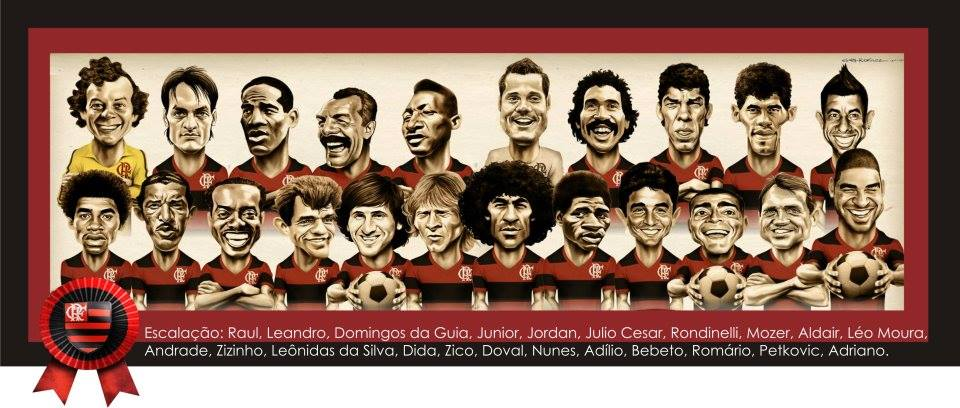

Flamengo
Títulos
Situação Atual
Maiores Ídolos do Flamengo
É difícil encontrar um clube no mundo que tenha um maior ídolo tão unânime quanto o Flamengo .
Não à toa, todos os 50 jornalistas convidados pelo GLOBO/Extra para eleger os maiores jogadores da história rubro-negra
colocaram Zico na primeira colocação.
Mas uma lista tão importante nao é medida apenas pelo seu principal nome. Neste caso, é o restante dela que gera o maior debate.
ZICO: 1º lugar em ranking de ídolos do Flamengo é dedicado ao pai
